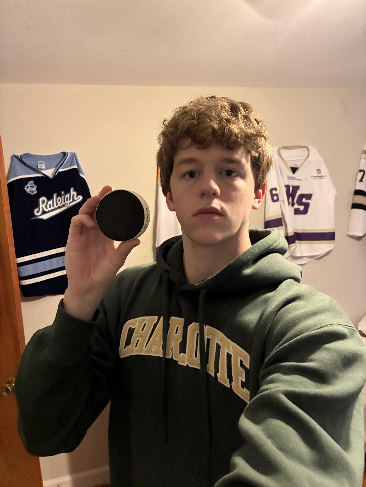

Everything Pictures
Exploring image formats, sizes, and proportions.
Image A: Pexels Photograph
A photograph from Pexels used to demonstrate image editing.
CSS Downsizing
Proper Image Resizing

Improper Image Proportions
Improper Enlargement

Image B: Personal Photograph
A personal photograph demonstrating geometric proportions.
Original Image

CSS Downsizing
Proper Image Resizing

Improper Image Proportions
Improper Enlargement